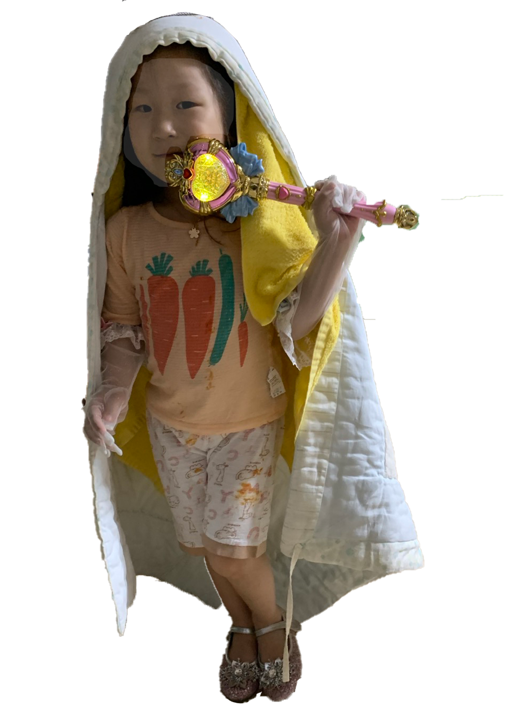

YUNHEALIN
윤해린은 2021년 3월 50일 태어났다. 춤 추고 노래하고 그림그리고 만들기를 좋아한다. 특히 하트 그리고 만들기를 좋아한다. 해린이가 만든 하트처럼 매순간 즐겁고 매일매일 행복하다. 생애 5번째 어린이 날을 맞아, 미이언즈와 기쁨의 턴을 하고 있다.


윤해린은 2021년 3월 50일 태어났다. 춤 추고 노래하고 그림그리고 만들기를 좋아한다. 특히 하트 그리고 만들기를 좋아한다. 해린이가 만든 하트처럼 매순간 즐겁고 매일매일 행복하다. 생애 5번째 어린이 날을 맞아, 미이언즈와 기쁨의 턴을 하고 있다.
